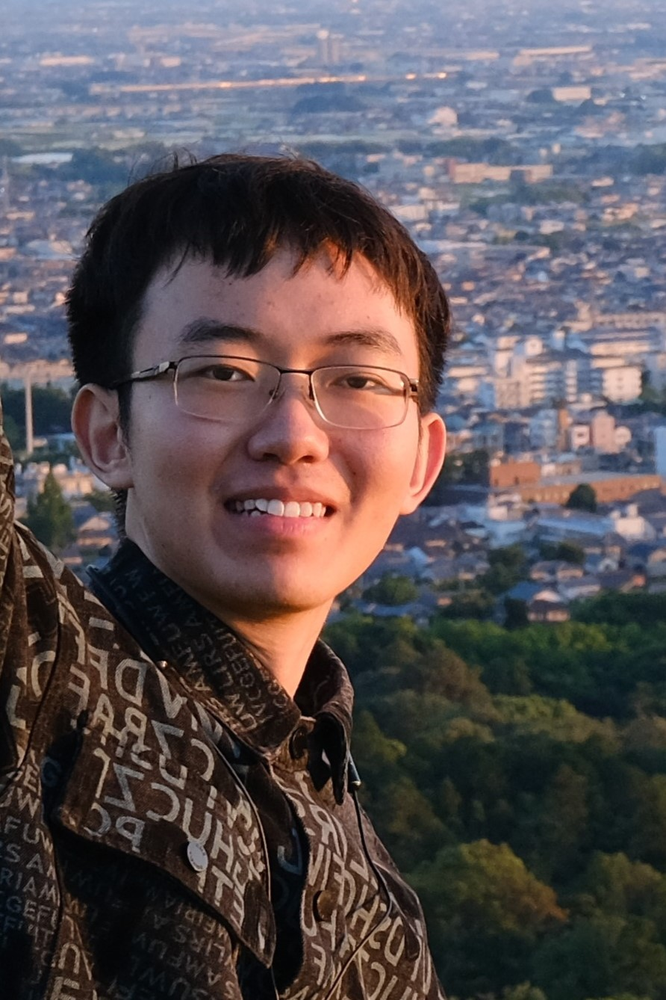

|  | Jiahao XuPh.D. student Department of Computer Science and Engineering |
I'm a Ph.D. student at the Department of Computer Science and Engineering, The Chinese University of Hong Kong (CUHK), under the supervision of Prof. Bei Yu since Fall 2024. Previously, I received my bachelor degree from Zhili College, Tsinghua University in 2024.
My research interests include heuristic and parallel algorithms for EDA.
[C1] Jiahao Xu, Yibin Zhang, Shenghan Gao, Jiecheng Huang, Ming Yang, and Wenjian Yu, “A 2-D Multi-Dielectric Capacitance Solver Based on Floating Random Walk Method”, in 2023 China Semiconductor Technology International Conference (CSTIC), Shanghai, China, 2023, pp. 1-3.
[C2] Shengbo Tong, Haoyuan Li, Jiahao Xu, Chunyan Pei, Wenjian Yu, Shengjun Liu, and Jian Shen. 2025. “EasyPart: An Effective and Comprehensive Hypergraph Partitioner for FPGA-based Emulation”. In Proceedings of the 43rd IEEE/ACM International Conference on Computer-Aided Design (ICCAD '24). Association for Computing Machinery, New York, NY, USA, Article 103, 1–9. https://doi.org/10.1145/3676536.3676680
[C3] Jiahao Xu, Chunyan Pei, Shengbo Tong, and Wenjian Yu. 2025. “Efficient Hypergraph Modeling of VLSI Circuits for the MFS-Based Emulation and Simulation Acceleration”. In Proceedings of the 30th Asia and South Pacific Design Automation Conference (ASPDAC '25). Association for Computing Machinery, New York, NY, USA, 1314–1320. https://doi.org/10.1145/3658617.3697758
[J1] Jiahao Xu, Zhuolun He, Shuo Yin, Yuan Pu, Wenjian Yu, and Bei Yu. 2025. “EasyMRC: Efficient Mask Rule Checking via Representative Edge Sampling”. ACM Trans. Des. Autom. Electron. Syst. 30, 3, Article 47 (May 2025), 19 pages. https://doi.org/10.1145/3723044
| The 46th ICPC Asia Regional Contest Jinan Site 2021 Gold Medal | ICPC | 2021 |
| The 36th National Olympiad in Informatics Silver Medal | NOI | 2019 |
| Ph.D., Computer Science and Engineering, The Chinese University of Hong Kong (CUHK), Aug/2024 - Now |
| Bachelor of Science, Information and Computing Science, Zhili College, Tsinghua University (THU), Sep/2020 - June/2024 |